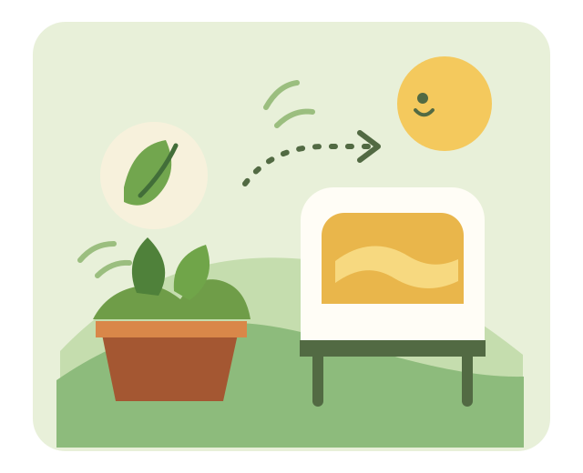

of food went to waste
Across households, food service and retail worldwide in 2022.
UNEP Food Waste Index 2024Gurugram food-sharing network
FoodBridge helps food donors, community kitchens, and local volunteers coordinate surplus food across Gurugram.
Create an account to get started. New community accounts are reviewed before food-sharing tools are enabled.

The challenge
Good food can be left behind when kitchens and community organizations have no easy way to find one another in time.
Across households, food service and retail worldwide in 2022.
UNEP Food Waste Index 2024Surplus is local and time-sensitive. Finding a nearby organization with the right capacity can be hard.
The opportunity for a better connectionFood recovery can help make more of the food already available reach community tables.
FAO food loss and wasteSource: UNEP, Food Waste Index Report 2024 (global estimate for 2022).
One local network
Food donors can publish available surplus. Approved community kitchens can request it, and volunteers can coordinate an accepted delivery.
How FoodBridge works
Each step is coordinated by an account approved for its role.
A donor posts food details, quantity, pickup deadline, and area. Contact details remain private until a request is accepted.
For food donorsAn approved community kitchen reviews available listings and sends a request to the donor.
For community partnersThe donor accepts a request, then an approved volunteer can claim the delivery and coordinate the handoff.
A better handoffFoodBridge coordinates requests and handoffs. Donors remain responsible for food safety and volunteers confirm pickup and delivery directly.
Designed for real people
Keep the information people need for a clear, safe handoff together.
Share food type, quantity, timing, and handling details in one easy-to-understand place.
Approved community kitchens can browse current Gurugram listings and request food.
Put practical food-safety guidance and a careful human handoff before convenience.
Pickup address and donor phone are shared only after a donor accepts a request.
Better together
Create an account and request the role that matches how you will participate. A FoodBridge administrator reviews new accounts before operational access is enabled.
Post food available for a nearby community kitchen to request.
Open donor workspaceBrowse current listings and send a request to the donor.
Browse food listingsClaim an accepted delivery task and coordinate the handoff.
Open volunteer workspaceNew accounts begin in review. Food-sharing tools become available after email verification and role approval.
Good to know
Create an account and request a donor or community-kitchen role. Tools unlock after your email is verified and your account is approved.
Donors post surplus, approved community kitchens request it, and approved volunteers can claim delivery tasks after the donor accepts a request.
Create an account and request a role. A FoodBridge administrator reviews the account before enabling tools for that role.